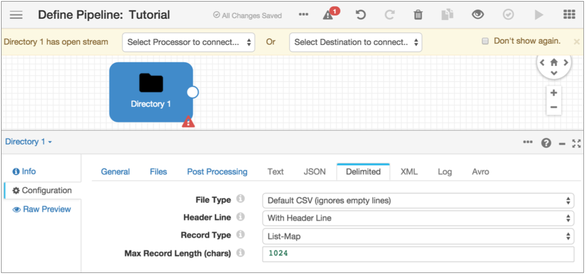
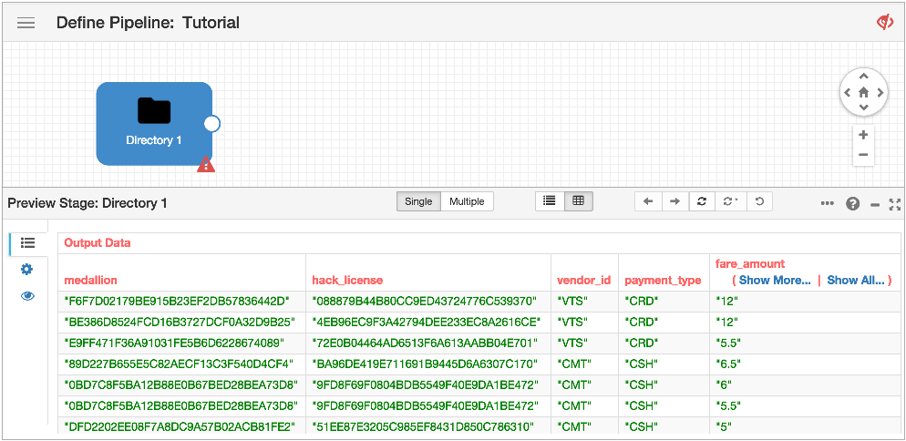
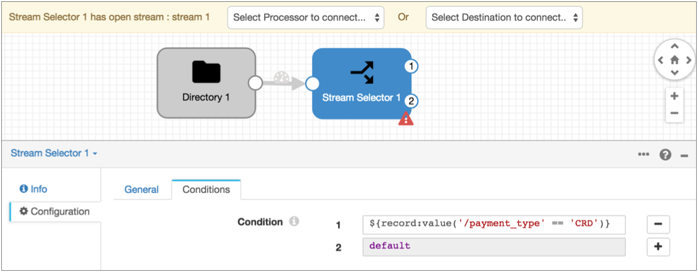
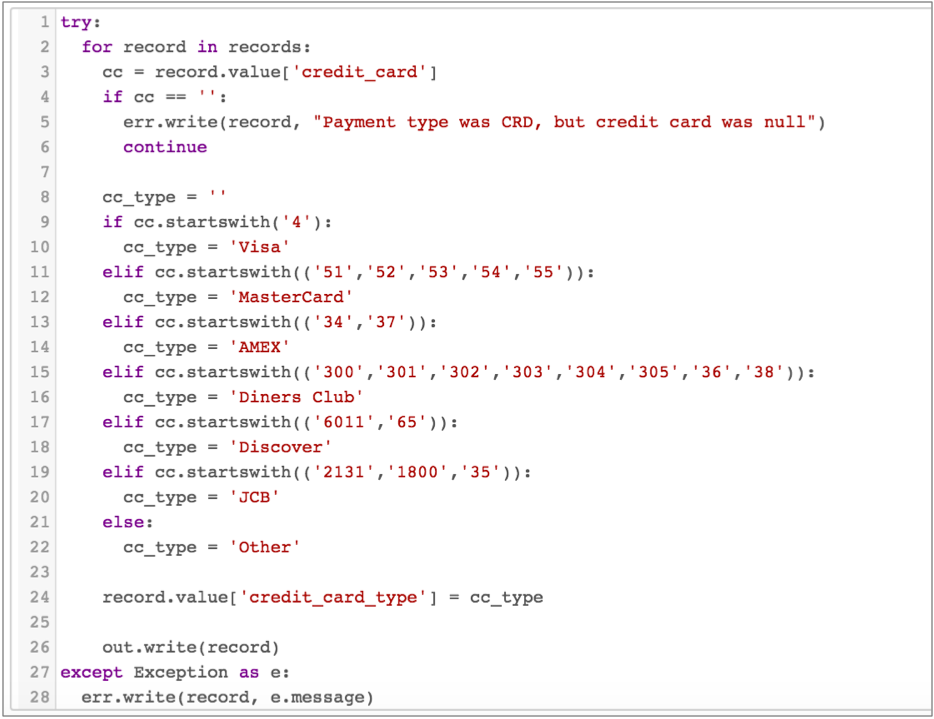

Basic Tutorial
The basic tutorial steps through creating a pipeline that splits data to two branches and merges it before writing to the destination. You'll use data prevew to check how the pipeline processes the data, and create a data alert before starting the pipeline.
- Configure pipeline properties, primarily error handling.
- Add a Directory origin to represent the data to be processed.
- Use a Stream Selector processor to route records paid by credit card to the primary branch and those paid by cash to an different branch. We'll set up a Required Field and use preview data to discard records without a payment type.
- Configure a Jython Evaluator to perform custom processing that determines the credit card type based on the credit card number.
- Add a Field Masker to mask credit card information.
- Use an Expression Evaluator to add corresponding fields to the cash records so all records have the same data format in the destination. Use data preview to verify the fields to add.
- Merge both branches to a Hadoop FS destination.
- Add a data rule to alert you to invalid data.
- Start the pipeline.
Creating a Pipeline and Defining Pipeline Properties
Generally, you can use defaults for pipeline properties, but you should always define how you want to handle error records.
If you have a Kafka cluster you can use for error records, feel free. The rest of us will write the records to a local file.
Configure the Origin
The origin represents the source data for the pipeline. When you configure the origin, you define how to connect to the data, and the type of data you're using.
In this case, use the Directory origin to process static file data.

Notice, the error icon on the Directory stage. If you hover over the icon or click the Issues icon, you see from the error message that it's just because you haven't connected it to anything yet. All in good time.
Preview Data
To route records that use credit card for payment to a separate branch for processing, we will use the Stream Selector processor. But before we do that, let's preview the source data to become more familiar with the data set.
- The name and field path of the field that contains payment information - We'll use this to route data in the Stream Selector.
- The field path for credit card numbers - We'll use this to mask the data in the Field Masker.
To start data preview, all stages must be connected and all required fields filled, though not necessarily correctly. In this case, the pipeline should be ready to preview as is.
-
Above the pipeline canvas, click the Preview icon:
 .
If the icon is not enabled, make sure you completed all the previous steps for the tutorial. If more than one issue displays in the list, correct any issue except Validation_0011 for the unconnected Directory stage.
.
If the icon is not enabled, make sure you completed all the previous steps for the tutorial. If more than one issue displays in the list, correct any issue except Validation_0011 for the unconnected Directory stage. -
For a full view of the data, click the Table View icon:
 The Preview panel displays the first several columns of data.
The Preview panel displays the first several columns of data.
-
To check the what the field path is for this field, click the List icon:

-
Click the arrow by the first record to display the list of maps in the record.
The payment_type field was the fourth field, so click the arrow by index number
3.
 From this information, we know that to reference the value of the payment_type field, we should use the following field path: [3]/value.
From this information, we know that to reference the value of the payment_type field, we should use the following field path: [3]/value. -
Now that we have the information that we need, exit data preview by clicking
the Close Preview icon:

Route Data with the Stream Selector
To route records that use credit card for payment to a separate branch for processing, we use the Stream Selector processor. We'll also define payment_type as a required field to drop records with no payment type. Required fields must include data to enter a stage.
The Stream Selector uses user-defined conditions to route data. Any data not captured by a user-defined condition routes to the default stream.
${record:dValue('payment_type') == 'CRD'}

Use Jython for Card Typing
The pipeline uses a Jython Evaluator to evaluate credit card numbers and determine the credit card type associated with each number.
The Data Collector provides a JavaScript Evaluator and Jython Evaluator so you can use custom script to perform processing that is not easily performed using other Data Collector processors.
In this pipeline, the Jython Evaluator creates an additional field, credit_card_type, and generates the credit card type based on the first few digits of the credit card number. The Jython script passes an error message if the record has a credit card payment type, but no credit card number.
Mask Credit Card Numbers
Now that the credit card type has been evaluated, we'll use a Field Masker to mask the credit card numbers.
The Field Masker provides fixed and variable-length masks that mask all data. You can create a custom mask that contains masked positions and revealed positions. And you can use a regular expression mask that defines the string and optionally allows you to reveal one or more groups in the string.
(.*)([0-9]{4})
Notice the expression defines two groups so we can reveal the second group.
Write to the Destination
You can use the Hadoop FS destination to write tutorial data to a Hadoop file system or a local directory.
When you configure the output file properties, you define the directory template, which determines the naming convention for the output directories that are created. Use the directory where you want the output files to be written.
Add Corresponding Fields with the Expression Evaluator
Use an Expression Editor to add fields to the non-credit card data flow so all records have the same format.
To do this, let's use data preview to verify the structure of records in the credit card branch.